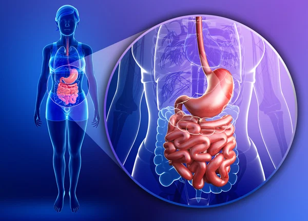

Por Redação Viva — Atualizado há 12 minutos

A constipação intestinal tem se tornado um problema cada vez mais comum no Brasil. Milhões de pessoas convivem com inchaço, dores abdominais, dificuldade para evacuar e uma sensação constante de desconforto que pode durar anos.
Embora muitos acreditem que a constipação seja apenas resultado da alimentação, estudos mostram que fatores como estresse, rotina sedentária, baixa ingestão de água e o uso frequente de laxantes podem agravar significativamente o problema.
Trabalhando por 12 anos em um lar de idosos em Minas Gerais, Lucas presenciou diariamente o sofrimento causado pela prisão de ventre severa. Idosos passavam até quatro dias sem conseguir evacuar, dependiam de laxantes fortes e viviam com dores constantes.
Determinada a mudar essa realidade, Lucas passou meses estudando hábitos matinais, alimentos específicos, rotinas corporais e técnicas usadas em centros geriátricos no exterior. Com isso, desenvolveu um protocolo simples que começou a aplicar nos idosos do asilo.
Em poucos dias, Lucas observou mudanças significativas:
A notícia se espalhou e logo adultos de todas as idades começaram a pedir ajuda. Foi então que Lucasdecidiu reunir todo seu conhecimento no ebook Método Sem Constipação, um guia prático e acessível.
O conteúdo foi escrito em linguagem simples e pensado para qualquer pessoa desde jovens até idosos que deseja acabar com a constipação de forma natural e sem remédios agressivos.